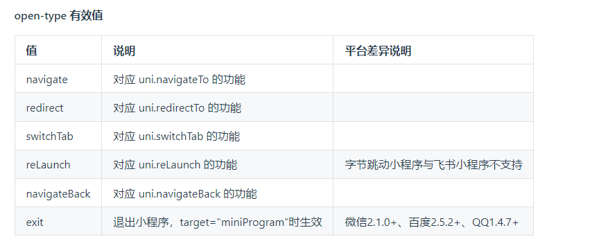

最近公司有一个开发小程序 + app的需求，没办法，只好用uniapp搞一波了。。。。。。
在这里做个笔记，方便前期开发的时候翻看
路由与页面跳转
navigator组件跳转
| <navigator
url="跳转路径"
open-type="跳转方式"
delta="当 open-type 为 'navigateBack' 时有效，表示回退的层数"
>
路由跳转
</navigator>
|

api跳转
1
2
3
| uni.navigateTo({
url: '/pages/index/index' // 默认跳转
})
|
1
2
3
| uni.switchTab({
url: '/pages/index/index' // tabbar跳转
})
|
1
2
3
| uni.redirectTo({
url: '/pages/index/index' // 重定向
})
|
1
2
3
| uni.navigateBack({
url: '/pages/index/index' // 返回上一个页面
})
|
1
2
3
| uni.reLaunch({
url: '/pages/index/index' // 重加载
})
|
数据缓存
1
| uni.setStorageSync('xxx', this.productId)
|
1
| uni.getStorageSync('xxx') // 从本地缓存中同步获取指定 key 对应的内容。
|
1
| uni.removeStorage({ key: 'xxx' })
|
数据请求
我自己封装了一下
/until/api.js
1
2
3
4
5
6
7
8
9
10
11
12
13
14
15
16
17
18
19
20
21
22
23
24
25
26
27
28
29
30
31
32
33
|
const BASE_URL = 'http:
export const api = (options) => {
const header_tmp = {
"Authorization": uni.getStorageSync("token"),
'Content-Type': options.contentType || 'application/json'
}
return new Promise((resolve, reject) => {
uni.request({
url: BASE_URL + options.url,
method: options.method || 'GET',
data: options.data || {},
header: header_tmp,
success: (res) => {
if(res.data.code === 20002) {
uni.removeStorage({ key: 'rate' })
uni.removeStorage({ key: 'openid' })
uni.removeStorage({ key: 'token' })
uni.removeStorage({ key: 'user' })
uni.showModal({ title: '登录时效已过期，请重新登录', icon: 'fail', showCancel: false, success: () => {
uni.navigateTo({ url: '/pages/login/login' })
}})
} else {
resolve(res)
}
},
fail: (err) => { reject(err) }
})
})
}
|
/main.js
1
2
| import { api } from '@/until/api.js'
Vue.prototype.$api = api
|
实际使用是这样的
默认GET请求
1
2
3
4
| async getSwipers() {
const res = await this.$api({url: '/open/home/get_banner'})
this.swipers = res.data.data
},
|
POST请求
1
2
3
4
5
6
7
8
| async addCart() {
const res = await this.$api({
method: 'POST',
contentType: 'application/x-www-form-urlencoded',
url: '/cart/post',
data: { userid: uni.getStorageSync('user').id, productId: this.productId }
})
}
|